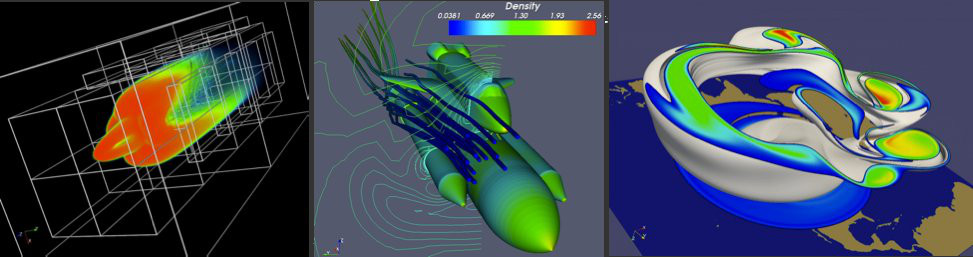
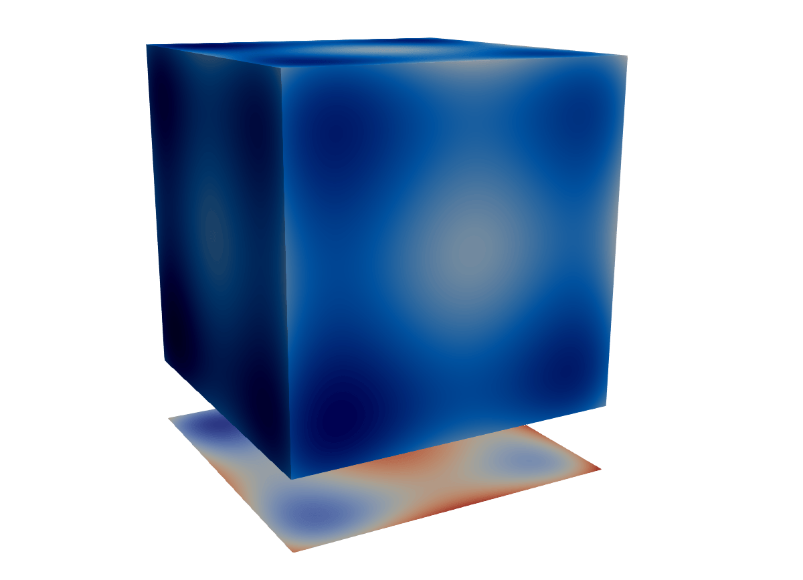
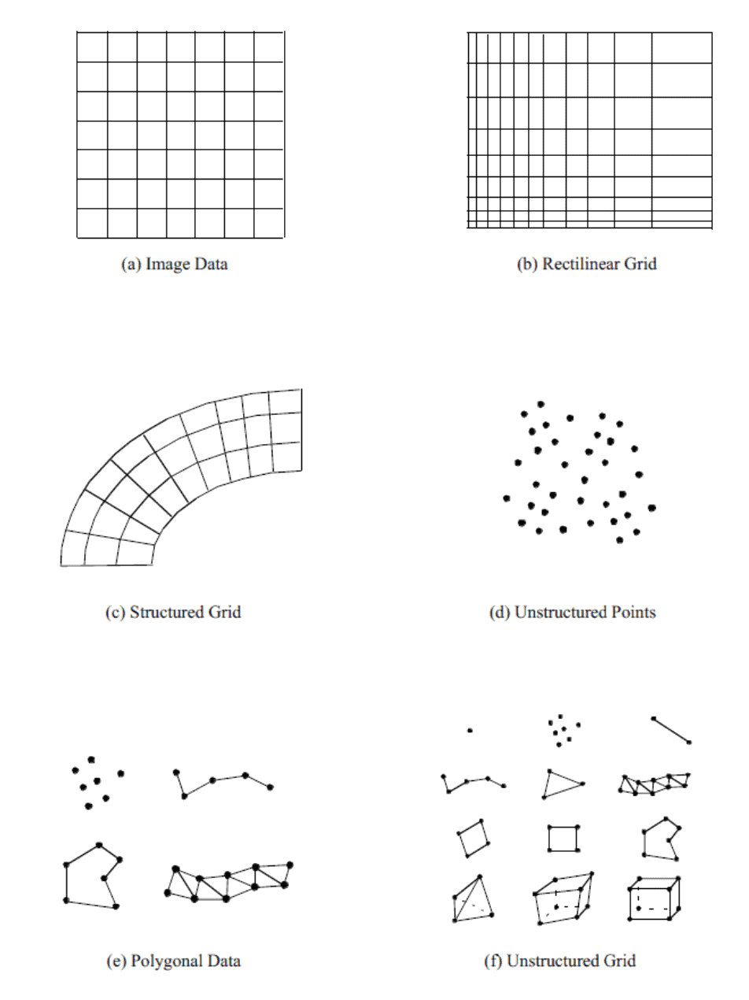
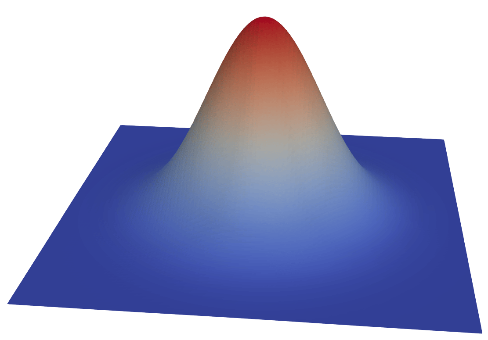
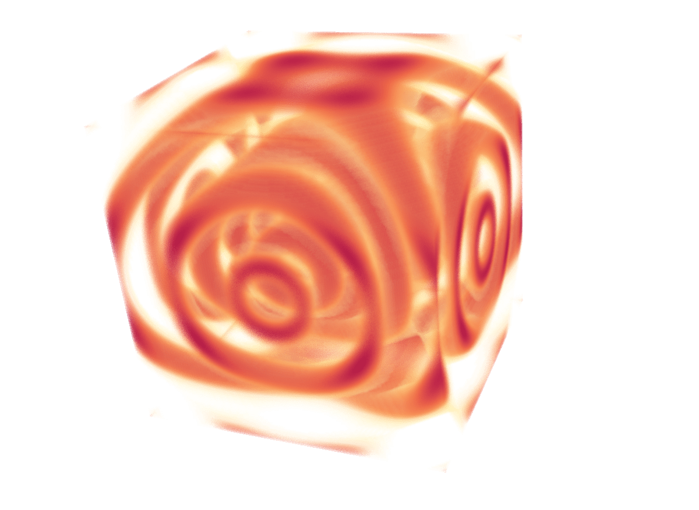
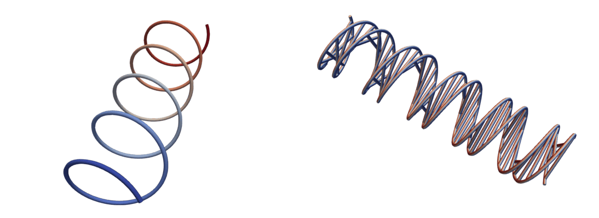
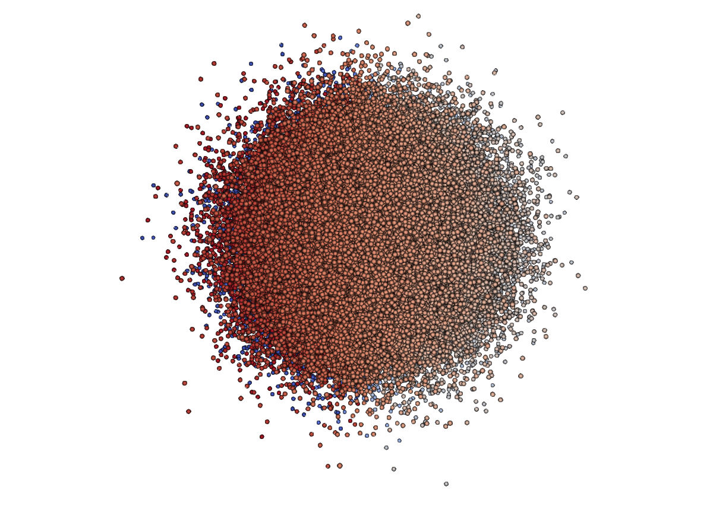
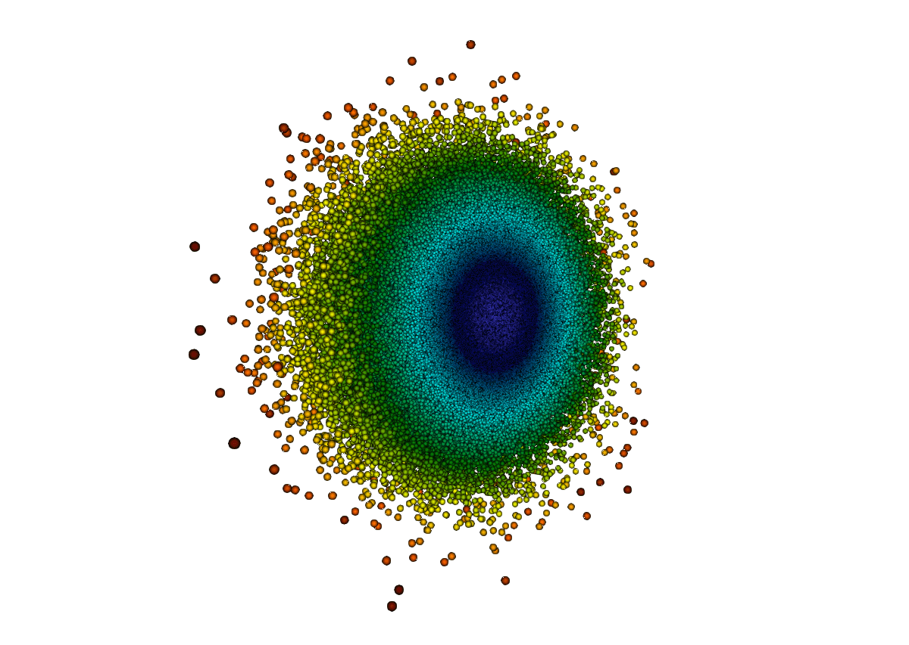
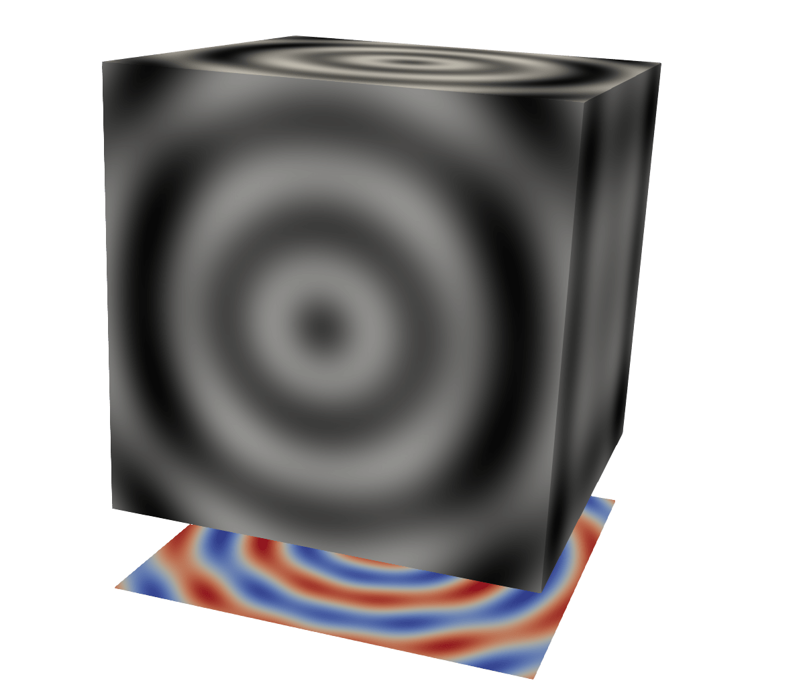
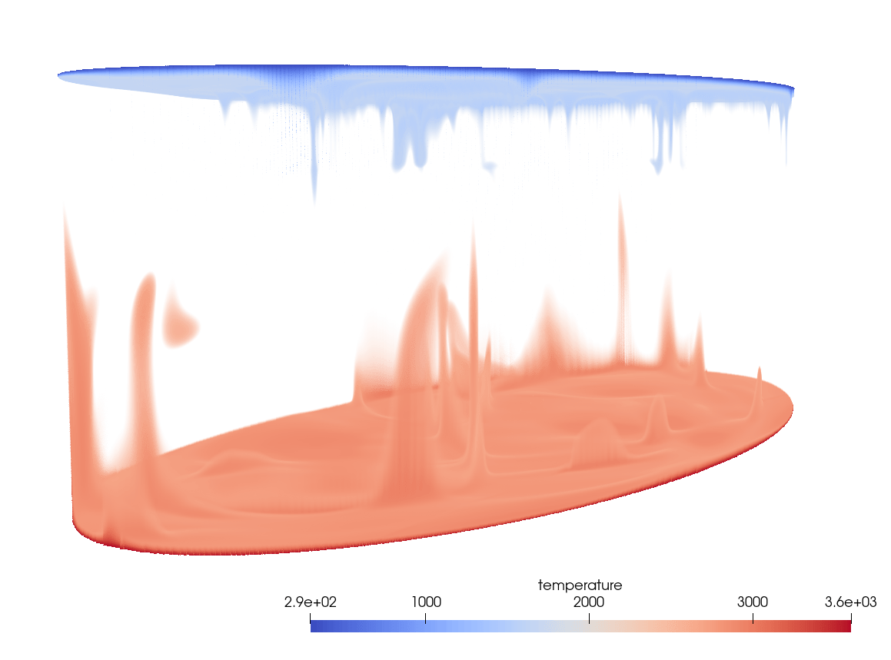

Hands-on with ParaView’s Programmable Filter & Source for scientific visualization
November 14th, 10am-noon Pacific Time
Instructor: Alex Razoumov (SFU)
Software: To participate in the course exercises, you will need to install ParaView on your computer and download this ZIP file (27MB). Unpack it to find the following data files: cube.txt, tabulatedGrid.csv, compact150.nc, and sineEnvelope.nc.
ParaView

- http://www.paraview.org
- Started in 2000 as a collaboration between Los Alamos National Lab and Kitware Inc., later joined by Sandia National Labs and other partners; first public release in 2002
- Source code available on GitHub, or can be downloaded as a pre-compiled binary for Linux/Mac/Windows
- To visualize extremely large datasets on distributed memory machines
- Both interactive and Python scripting
- Client-server for remote interactive visualization
- Uses MPI for distributed-memory parallelism on HPC clusters
- ParaView is based on VTK (Visualization Toolkit)
- not the only VTK-based open-source scientific renderer, e.g. VisIt, MayaVi (Python + numpy + scipy + VTK), an of course a number of Kitware’s own tools besides ParaView are based on VTK
- VTK can be used as a standalone renderer from C++, Python, and now JavaScript
We teach both beginner’s (typically full-day) ParaView workshops and additional, more advanced topics:
🔵 VTK programming (overlap with today’s topic)
✅ Web-based 3D scientific visualization: ParaViewWeb, VTK.js, ParaView Glance, ParaView Lite, Visualizer
✅ ParaView Cinema
✅ Catalyst in-situ visualization library
🔵 AMR (multi-resolution) & multi-block datasets
✅ CPU-based ray tracing and photorealistic rendering with OSPRay
✏️ Ray tracing on CUDA-supported cards with Nvidia OptiX ✏️ Scalable 3D volumetric visualization on GPU clusters with NVIDIA IndeX
✅ Remote and parallel interactive visualization
✅ Batch visualization
✅ Advanced scripting
✅ Programmable Filter & Source in ParaView
🔵 Writing ParaView plugins
✅ Advanced animation
✅ Topological data analysis
✏️ Using ParaView with special hardware: HMDs, stereo projectors, Looking Glass
You can watch some of these webinar recordings at https://bit.ly/vispages.
Python scripting
Inside ParaView you can use Python scripting in several places:
- Any ParaView workflow can be saved as a Python script (Tools | Start/Stop Trace)
- run via
pvpython, orpvbatch(especially useful for batch visualization) - run via View | Python Shell
- run via
- Any ParaView state can be saved as a Python script (File | Save State)
- run via File | Load State
- Filters | Python Calculator
- Filters | Programmable Filter / Source
Why would you want to use the Programmable Filter / Source? Fundamentally, these tools let you create custom VTK objects directly from ParaView. Let’s say we want to plot a projection of a cubic dataset along one of its principal axes, or do some other transformation for which there is no filter.

Calculator / Python Calculator filter cannot modify the geometry …
VTK data types

In today’s examples we will create datasets in the following formats:
- vtkImageData,
- vtkPolyData, and
- vtkStructuredGrid.
For simplicity, we will skip the examples with Output Data Set Type = vtkUnstructuredGrid – that would produce the most versatile object, but with any unstructured cells you will have to describe the connections between their points needed to form these cells. You can find a couple of examples of creating vtkUnstructuredGrid in a 2021 webinar.
Programmable Filter workflow
- Apply Programmable Filter to a ParaView pipeline object
- Select Output Data Set Type: either Same as Input, or one of the VTK data types from above
- In the Script box, write Python code: input from a pipeline object → output
- use
inputs[0].Points[:,0:3]and/orinputs[0].PointData['array name']and/orinputs[0].CellData['array name']to compute your output: points, cells, and data arrays - some objects take/pass multiple
inputs[:]
- Depending on output’s type, might need to describe it in the RequestInformation Script box
- Hit Apply
Programmable Source workflow
Same as Programmable Filter but without an input.
- build an object programmatically
- read and process data from a file
Simple Programmable Filter example
Start with a very simple example. Let’s create a 2D Gaussian
\[f(\vec r)=e^{-\frac{|\vec r-\vec r_0|^2}{2\sigma^2}},\quad\vec r\in\mathbb{R}^2\]
centered at (0,0).
- Apply Sources | Plane at \(100^2\) resolution
- Apply Programmable Filter
- set Output Data Set Type = Same as Input
- this will create the same discretization (vtkPolyData) as its input, without the fields (PointData)
- Let’s print some info
print(type(output)) # paraview.vtk.numpy_interface.dataset_adapter.PolyData
print(dir(output))
print(output.Points.shape) # actually a 3D dataset
print(output.Points) # but all z-coordinates are 0s- Paste into Script
x = inputs[0].Points[:,0]
y = inputs[0].Points[:,1]
output.Points[:,2] = 0.5*exp(-(x**2+y**2)/(2*0.02))
dataArray = 0.3 + 2*output.Points[:,2]
output.PointData.append(dataArray, "pnew") # add the new data array to our output- Display in 3D, colour with
pnew

- A scalar field is stored as a flat, 1D array over 3D points
print(output.PointData["pnew"].shape)- Multiple ways to access data, e.g. these two lines point to the same array
print(output.PointData["pnew"])
print(output.GetPointData().GetArray("pnew"))- The same for points
print(output.GetNumberOfPoints())
print(output.GetPoint(1005))
print(output.Points[1005,:])Programmable Source
Let’s switch to the Programmable Source. It has no input, so we will need to set its Output Data Set Type to one of the VTK data types.
Build a custom reader
A common use of Programmable Source is to prototype readers. Let’s quickly create our own reader for a CSV file with 3D data on a grid.
We will start with a conventional approach to reading CSV files:
- File | Open, navigate to
tabulatedGrid.csv, select CSV Reader - Pass tabular data through Table To Structured Grid
- set data extent in each dimension
- specify
x/y/zcolumns - colour with
scalar
Now let’s replace this with reading the CSV file directly to the Cartesian mesh, without using the File | Open dialogue. Reset your ParaView and then:
- Apply Programmable Source, set Output Data Set Type = vtkImageData
- Into Script paste this code:
import numpy as np
data = np.genfromtxt("/Users/razoumov/programmableFilter/tabulatedGrid.csv",
dtype=None, names=True, delimiter=',', autostrip=True)
nx = len(set(data['x']))
ny = len(set(data['y']))
nz = len(set(data['z']))
output.SetDimensions(nx,ny,nz)
output.SetExtent(0,nx-1,0,ny-1,0,nz-1)
output.SetOrigin(0,0,0)
output.SetSpacing(.1,.1,.1)
output.AllocateScalars(vtk.VTK_FLOAT,1)
vtk_data_array = vtk.util.numpy_support.numpy_to_vtk(num_array=data['scalar'], array_type=vtk.VTK_FLOAT)
vtk_data_array.SetNumberOfComponents(1)
vtk_data_array.SetName("density")
output.GetPointData().SetScalars(vtk_data_array)- The Image (Uniform Rectilinear Grid) array is properly created (check the Information tab!), but nothing shows up …
We need to tell the ParaView pipeline about the dimensionality of our vtkImageData!
- Into Request Information paste this code:
from paraview import util
nx, ny, nz = 10, 10, 10
util.SetOutputWholeExtent(self, [0,nx-1,0,ny-1,0,nz-1])Exercise: reveal the data in the cube
The file cube.txt has 125,000 integers that were computed and printed with this Julia code: - 50 lines - each line contains 2500 integers
for i in 1:50
for j in 1:50
for k in 1:50
print(data[i,j,k], " ")
end
end
println()
endYou need to modify the previous Programmable Source to read this data.
Write a 3D function directly into Cartesian mesh: numpy → VTK
Similar to using a Source to read data from a file, you can use a Source to create a discretized version of a 3D function.
- Apply Programmable Source, set Output Data Set Type = vtkImageData
- Into Script paste this code:
from numpy import linspace, sin, sqrt
n = 100 # the size of our grid
output.SetDimensions(n,n,n)
output.SetOrigin(0,0,0)
output.SetSpacing(.1,.1,.1)
output.SetExtent(0,n-1,0,n-1,0,n-1)
output.AllocateScalars(vtk.VTK_FLOAT,1)
x = linspace(-7.5,7.5,n) # three orthogonal discretization vectors
y = x.reshape(n,1)
z = x.reshape(n,1,1)
data = ((sin(sqrt(y*y+x*x)))**2-0.5)/(0.001*(y*y+x*x)+1.)**2 + \
((sin(sqrt(z*z+y*y)))**2-0.5)/(0.001*(z*z+y*y)+1.)**2 + 1.
vtk_data_array = vtk.util.numpy_support.numpy_to_vtk(
num_array=data.ravel(), deep=False, array_type=vtk.VTK_FLOAT)
vtk_data_array.SetNumberOfComponents(1)
vtk_data_array.SetName("density")
output.GetPointData().SetScalars(vtk_data_array) # use it as a scalar field in the output- Into Request Information paste this code:
from paraview import util
n = 100
util.SetOutputWholeExtent(self, [0,n-1,0,n-1,0,n-1])
Single helix source example from ParaView docs
Let’s create from scratch a Polygonal Data object.
- Apply Programmable Source, set Output Data Set Type = vtkPolyData
- Paste this code:
import numpy as np
import vtk.numpy_interface.algorithms as alg
numPoints, length, rounds = 300, 8.0, 5
index = np.arange(0, numPoints, dtype=np.int32) # 0, ..., numPoints-1
phi = rounds * 2 * np.pi * index / numPoints
x, y, z = index * length / numPoints, np.sin(phi), np.cos(phi)
coordinates = alg.make_vector(x, y, z) # numpy array (numPoints,3)
output.Points = coordinates # set point coordinates
output.PointData.append(phi, 'angle') # append a scalar field on points
pointIds = vtk.vtkIdList()
pointIds.SetNumberOfIds(numPoints)
for i in range(numPoints): # define a single polyline connecting all the points in order
pointIds.SetId(i, i) # point i in the line is formed from point i in vtkPoints
output.Allocate(1) # allocate space for one vtkPolyLine 'cell' to the vtkPolyData object
output.InsertNextCell(vtk.VTK_POLY_LINE, pointIds) # add this 'cell' to the vtkPolyData object
Programmatically generated point cloud
Here we use exactly the same technique (use Source to create a vtkPolyData object, add a bunch of points, create a single cell) with a very different looking result.
- Apply Programmable Source, set Output Data Set Type = vtkPolyData
- Paste this code:
from numpy import abs, random, sin, cos, pi, arcsin
numPoints = 1_000_000
r = abs(random.randn(numPoints)) # 1D array drawn from a normal (Gaussian) distribution
theta = arcsin(2.*random.rand(numPoints)-1.) # use 1D array drawn from a uniform [0,1) distribution
phi = 2.*pi*random.rand(numPoints) # use 1D array drawn from a uniform [0,1) distribution
x = r*cos(theta)*sin(phi)
y = r*cos(theta)*cos(phi)
z = r*sin(theta)
coordinates = vtk.numpy_interface.algorithms.make_vector(x, y, z) # numpy array (numPoints,3)
output.Points = coordinates # set point coordinates
output.PointData.append(r, "r") # append a scalar field on points
output.PointData.append(phi, "phi") # append another scalar field on points- Points are not visible in ParaView ⇨ either (a) switch to Point Gaussian representation, or (b) in Script’s output create a single cell without connections
pointIds = vtk.vtkIdList()
pointIds.SetNumberOfIds(numPoints)
for p in range(numPoints):
pointIds.SetId(p, p)
output.Allocate(1) # allocate space for a single cell
output.InsertNextCell(vtk.VTK_POLY_VERTEX, pointIds)
- Colour by radius
- Apply Clip (need the cell for that)
- Optionally switch back to Point Gaussian representation

Projection to a plane: numpy → VTK
- Load
sineEnvelope.nc - Apply Programmable Filter, set Output Data Set Type = vtkImageData
- Into Script paste this code:
numPoints = inputs[0].GetNumberOfPoints()
side = round(numPoints**(1./3.))
layer = side*side
rho = inputs[0].PointData['density']
output.SetOrigin(inputs[0].GetPoint(0)[0], inputs[0].GetPoint(0)[1], -20.)
output.SetSpacing(1.0, 1.0, 1.0)
output.SetDimensions(side, side, 1)
output.SetExtent(0,99,0,99,0,1)
output.AllocateScalars(vtk.VTK_FLOAT, 1)
rho3D = rho.reshape(side, side, side)
vtk_data_array = vtk.util.numpy_support.numpy_to_vtk(rho3D.sum(axis=2).ravel(),
deep=False, array_type=vtk.VTK_FLOAT)
vtk_data_array.SetNumberOfComponents(1)
vtk_data_array.SetName("projection")
output.GetPointData().SetScalars(vtk_data_array)- Into Request Information paste this code:
from paraview import util
n = 100
util.SetOutputWholeExtent(self, [0,n-1,0,n-1,0,0])
Exercise: plotting spherical dataset as 3D Mollweide map
- Spherical dataset animation: the traditional view
- Best Cover Visualization submission with the 3D Mollweide projection
- On presenter’s laptop watch the full video
open $(fd vis21g-sub1007-i5.mp4 ~/Documents)
Playing with the dataset in standalone Python
import xarray as xr
data = xr.open_dataset('/Users/razoumov/programmableFilter/compact150.nc')
print(data) # show all variables inside this dataset
print(data.r) # radial discretization
print(data.temperature.values) # this is a 180x201x360 numpy array
data["temperature anomaly"].shape
print(data.lon.values)
print(data.lat.values)Although the Mollweide projection is available in packages like matplotlib, we need a standalone implementation that takes the geographical coordinates and returns the Cartesian coordinates in the projection. I used the formulae from the wiki page to write my own function:
from math import sin, cos, pi, sqrt, radians
def mollweide(lon, lat):
"""
lon: input longitude in degrees
lat: input latitude in degrees
"""
lam, phi = radians(lon), radians(lat)
lam0 = radians(180) # central meridian
tolerance = 1.0e-5
if abs(abs(phi)-pi/2.) < tolerance:
theta = phi
else:
theta, dtheta = phi, 1e3
while abs(dtheta) > tolerance:
twotheta = 2 * theta
dtheta = theta
theta = theta - (twotheta + sin(twotheta) - pi*sin(phi))/(2 + 2*cos(twotheta))
dtheta -= theta
s2 = sqrt(2)
x = 2 * s2/pi * (lam-lam0) * cos(theta)
y = s2 * sin(theta)
return (x,y)
lam = data.lon.values[100]
phi = data.lat.values[50]
mollweide(lam,phi)Back to ParaView
Our goal is to create something like this: 
- load
compact150.nc, uncheck Spherical Coordinates - apply Programmable Filter, set Output Data Set Type = vtkStructuredGrid
- let’s start playing with the data in the Script dialogue:
print(inputs[0].GetNumberOfPoints()) # 13024800 = 360*201*180
pointIndex = 0 # any inteteger between 0 and 13024799
print(inputs[0].GetPoint(pointIndex)[0:3]) # (0.0, 3485.0, 90.0)
print(inputs[0].PointData['temperature'])
print(inputs[0].PointData["temperature"].GetValue(pointIndex))We can paste the entire mollweide(lon, lat) function definition into the Programmable Filter, or – to shorten the code inside the filter – we can load it from a file. Let’s save it in mollweide.py and then test it from a standalone Python shell:
import sys
sys.path.insert(0, "/Users/razoumov/programmableFilter")
from mollweide import mollweide
mollweide(100,3)Here is what our filter will look like:
from math import sin, cos, pi, sqrt, radians
import numpy as np
import sys
sys.path.insert(0, "/Users/razoumov/programmableFilter")
from mollweide import mollweide
temp_in = inputs[0].PointData["temperature"]
nlon, nr, nlat = 360, 201, 180
points = vtk.vtkPoints()
points.Allocate(nlon*nr*nlat)
temp = vtk.vtkDoubleArray() # create vtkPoints instance, to contain 100^2 points in the projection
temp.SetName("temperature")
output.SetExtent([0,nlon-1,0,nr-1,0,nlat-1]) # should match SetOutputWholeExtent below
x, y = np.zeros((nlon,nlat)), np.zeros((nlon,nlat))
for i in range(nlat): # the order of loops should reverse-match SetExtent
for j in range(nr):
for k in range(nlon):
inx = k + i*nlon*nr + j*nlon
if j == 0: # inner radius = base layer
lon, r, lat = inputs[0].GetPoint(inx)[0:3]
x[k,i], y[k,i] = mollweide(lon,lat)
points.InsertNextPoint(x[k,i],y[k,i],0.01*j)
temp.InsertNextValue(temp_in.GetValue(inx))
output.SetPoints(points)
output.GetPointData().SetScalars(temp)Optionally, you can paste the following into RequestInformation Script:
from paraview import util
nlon, nr, nlat = 360, 201, 180
util.SetOutputWholeExtent(self,[0,nlon-1,0,nr-1,0,nlat-1]) # the order is fixed and copied from inputSaving workflow
- Save as a ParaView state file ⇨ filter’s Python code with appear inside an XML element
- Save as a Python state file ⇨ filter’s Python code with appear inside
programmableFilter1.Scriptvariable
Summary
- Workflow suggestions
- use
printfrom inside the Filter/Source - go slowly and save frequently, as ParaView will crash when you don’t allocate objects properly inside Programmable Filter/Source
- use
- Links
- Programmable Filter in the offical ParaView documentation
- an article NumPy to VTK: Converting your NumPy arrays to VTK arrays and files
- first half of the talk by Jean M. Favre (Swiss National Supercomputing Centre)
- Future topic: converting Programmable Filter’s code to a plugin
- code its own custom GUI Properties using Python decorators
- after loading your plugin, it should be available as a normal filter or source in the menu